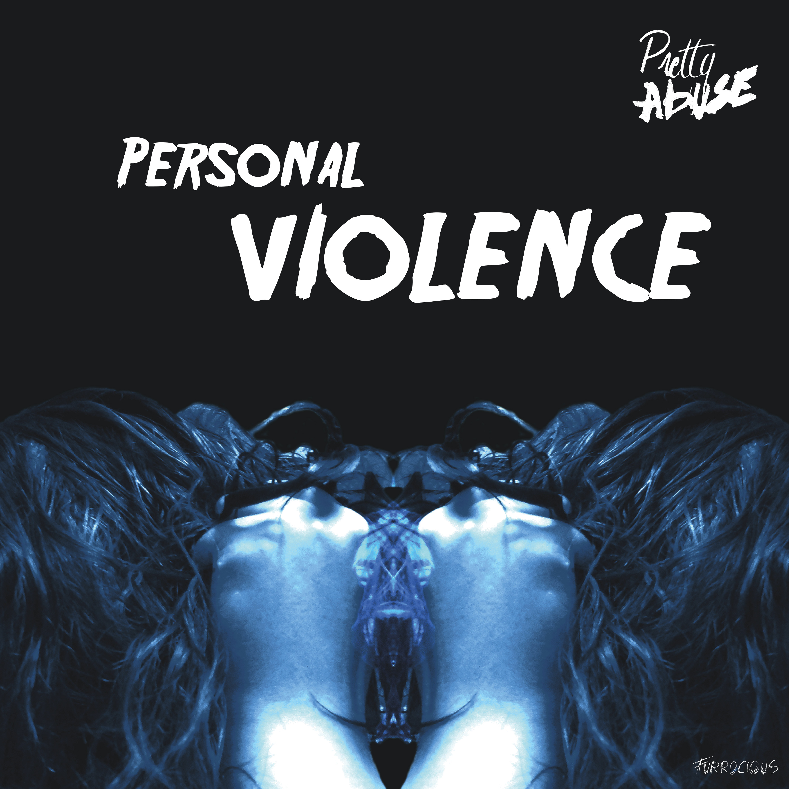
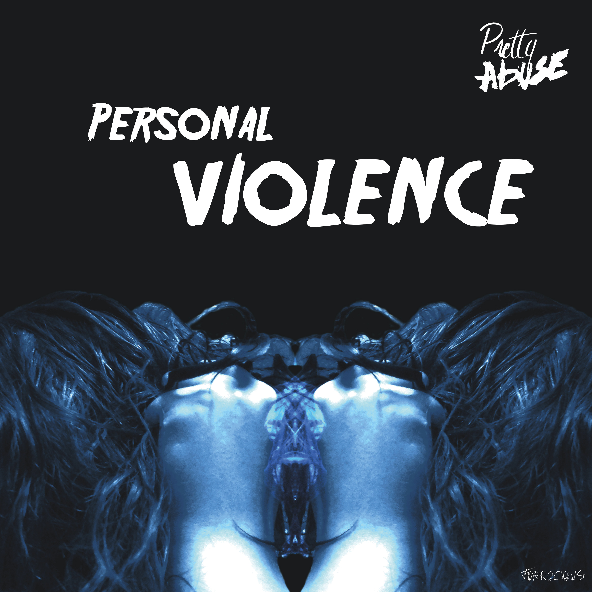

The Pretty Abuse
Join them with their sensitive topics and their distinctive looks. Old but gold!
Over
""Welke leeftijd je ook hebt, de mannen van Pretty Abuse zullen je doen versteld staan met hun ‘originele’ hair Metal. Hun eigen leeftijd houd hen niet tegen om te staan rocken op het podium alsof het hun laatste optreden is. Laat je niet verblinden door hun speciale looks, want deze rockers hebben ook een zacht kantje. Ontdek en laat je meeslepen in de muziek van Pretty Abuse.""

Albums

 
